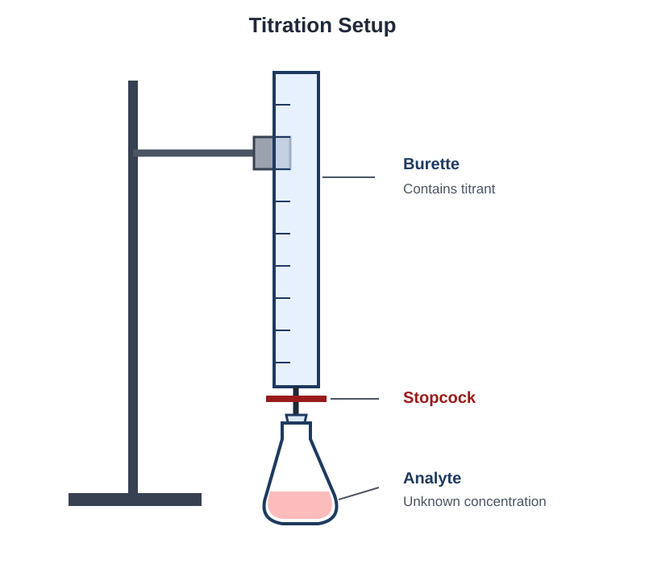

Chemical Reactions
Learn how to represent chemical changes, identify reaction types, calculate reacting quantities, and explain reactions using particles, ions, and electrons.
Topics
Representing Reactions
Balance equations and connect symbolic equations to particle-level representations and observable changes.
Net Ionic Equations
Separate strong electrolytes into ions and identify spectator ions in aqueous reactions.
Stoichiometry and Titration
Use balanced equations to calculate reacting amounts, limiting reactants, yields, and titration results.
Reaction Types
Recognize precipitation, acid–base, and oxidation– reduction reactions.
Representing Chemical Reactions
A chemical reaction rearranges atoms to form different substances. Chemical equations represent the identities and relative amounts of the reactants and products.
Parts of a Chemical Equation
Reactants are the substances present before the reaction. Products are the substances formed by the reaction. An arrow indicates the direction of the chemical change.
| State Symbol | Meaning |
|---|---|
| (s) | Solid |
| (l) | Liquid |
| (g) | Gas |
| (aq) | Dissolved in water |
Coefficients and Subscripts
A coefficient is written before a chemical formula and indicates the relative number of particles or moles. A subscript is part of the chemical formula and indicates the ratio of atoms within a particle.
Example: Coefficient Versus Subscript
The coefficient 2 represents two water molecules. Each molecule contains two hydrogen atoms and one oxygen atom.
Steps for Balancing an Equation
- Write the correct chemical formulas for all reactants and products.
- Count the number of atoms of each element on both sides.
- Add coefficients to make the number of each type of atom equal.
- Reduce the coefficients to the smallest whole-number ratio when possible.
- Check the final atom counts and, for ionic equations, the total charge on both sides.
Example: Formation of Water
The unbalanced equation is:
Place a coefficient of 2 before H₂O to balance oxygen. Then place a coefficient of 2 before H₂ to balance hydrogen.
| Element | Reactant Side | Product Side |
|---|---|---|
| Hydrogen | 4 atoms | 4 atoms |
| Oxygen | 2 atoms | 2 atoms |

Physical and Chemical Changes
A physical change alters a substance’s state, shape, or arrangement without changing the identities of its particles. A chemical change rearranges atoms and forms substances with different chemical identities.
| Physical Change | Chemical Change |
|---|---|
| Melting or freezing | Formation of a precipitate |
| Boiling or condensation | Formation of a gas through reaction |
| Cutting or changing shape | Formation of substances with new chemical identities |
| Dissolving without reaction | Transfer of electrons or rearrangement of bonds |
Evidence of a Chemical Reaction
Observations that may provide evidence of a chemical reaction include:
- Formation of a solid precipitate from aqueous solutions
- Unexpected production of gas
- A lasting color change
- A temperature change caused by the reaction
- Emission of light
Representing Reactions Practice
Try each question before opening its solution.
Question 1: Balancing an Equation
Balance the following equation using the smallest whole-number coefficients:
Show solution
Begin by balancing oxygen. The least common multiple of 2 and 3 is 6, so use 3O₂ and 2Al₂O₃.
The product side now contains four aluminum atoms, so place a coefficient of 4 before aluminum.
Question 2: Interpreting Coefficients
Consider the balanced equation:
If two N₂ molecules react with six H₂ molecules, how many NH₃ molecules can form?
Show solution
The amounts given are twice the coefficients in the balanced equation:
Therefore, four NH₃ molecules can form.
Question 3: Checking Atom Conservation
A student proposes the equation:
Is the equation balanced? If not, provide the balanced equation.
Show solution
The original equation is not balanced. It contains four hydrogen atoms on the reactant side but only two on the product side.
Place a coefficient of 2 before water, then balance oxygen with a coefficient of 2 before O₂:
Question 4: Physical or Chemical Change?
A sample of solid water melts into liquid water. Is this a physical or chemical change? Explain using particle identity.
Show solution
Melting is a physical change. The arrangement and movement of the water molecules change, but every particle remains an H₂O molecule.
No substance with a new chemical identity is formed.
Question 5: Evaluating Evidence
Bubbles appear when a liquid is heated. Does this observation alone prove that a chemical reaction occurred?
Show solution
No. The bubbles could result from a physical change, such as the liquid boiling and entering the gas phase.
More evidence would be needed to show that a gas with a new chemical identity was produced.
Watch: Representing Chemical Reactions
Watch an explanation of balancing equations, coefficients, particle representations, and physical versus chemical changes.
Net Ionic Equations
A net ionic equation shows only the particles that undergo a chemical change during an aqueous reaction. Ions that remain unchanged are called spectator ions and are omitted.
Strong Electrolytes in Ionic Equations
Soluble ionic compounds and strong acids or bases are represented as separated ions when they are dissolved in water.
Substances that are solids, liquids, gases, weak electrolytes, or insoluble compounds are generally kept together in ionic equations.
Spectator Ions
Spectator ions appear in the same form on both sides of a complete ionic equation. They remain dissolved and do not undergo the chemical change represented by the net ionic equation.
Steps for Writing a Net Ionic Equation
- Write and balance the molecular equation.
- Separate strong aqueous electrolytes into their individual ions.
- Keep solids, liquids, gases, and weak electrolytes together.
- Cancel spectator ions that appear unchanged on both sides.
- Confirm that both atoms and total charge are balanced in the final net ionic equation.
Example: Formation of AgCl
Aqueous silver nitrate and sodium chloride react to form solid silver chloride.
Molecular Equation
Complete Ionic Equation
→
AgCl(s) + Na+(aq) + NO3−(aq)
Na+ and NO3− appear unchanged on both sides, so they are spectator ions.
Net Ionic Equation

Checking a Net Ionic Equation
A correct net ionic equation must conserve both atoms and electrical charge. For the formation of AgCl, the total charge on the reactant side is zero, matching the neutral solid product.
Helpful Solubility Patterns
Solubility patterns help predict whether ions remain separated in aqueous solution or form an insoluble precipitate. These patterns include exceptions, so they should be applied carefully.
| Ion or Compound Type | General Solubility Pattern |
|---|---|
| Group 1 metal ions | Compounds are soluble |
| NH4+ | Compounds are soluble |
| NO3− | Compounds are soluble |
| Cl−, Br−, and I− | Usually soluble; important exceptions include compounds containing Ag+, Pb2+, or Hg22+ |
| SO42− | Usually soluble; important exceptions include compounds containing Ba2+, Sr2+, or Pb2+ |
| CO32− and PO43− | Usually insoluble except with Group 1 ions or NH4+ |
| OH− | Usually insoluble, with important exceptions involving Group 1 ions and some larger Group 2 ions |
Strong Acid–Strong Base Reactions
Strong acids and strong bases are represented as separated ions in aqueous solution. Their neutralization reaction commonly reduces to the formation of liquid water.
Example: HCl and NaOH
Complete ionic equation:
→
Na+(aq) + Cl−(aq) + H2O(l)
Na+ and Cl− are spectator ions.
Net ionic equation:
Weak Electrolytes in Net Ionic Equations
Weak acids and weak bases are not separated completely into ions because most of their particles remain in molecular form.
Example: HF and OH−
HF is a weak acid, so it remains together on the reactant side.
Net Ionic Equation Practice
Try each question before opening its solution.
Question 1: Identifying Spectator Ions
Consider the reaction:
Identify the spectator ions and write the net ionic equation.
Show solution
Na+ and Cl− remain aqueous and unchanged, so they are spectator ions.
Question 2: Strong Acid and Strong Base
Write the net ionic equation for the reaction between aqueous HNO3 and aqueous KOH.
Show solution
HNO₃ and KOH are strong electrolytes. K+ and NO3− are spectator ions.
Question 3: Weak Acid Reaction
A student writes HF as H+ and F− in a net ionic equation. Explain why this representation is incorrect.
Show solution
HF is a weak acid and does not ionize completely in water. Most HF particles remain together, so HF should be written in molecular form in the net ionic equation.
Question 4: Predicting a Precipitate
A solution containing Ag+ is mixed with a solution containing Br−. Predict whether a precipitate forms and write the net ionic equation.
Show solution
AgBr is insoluble, so a solid precipitate forms.
Question 5: Checking Charge Conservation
Show that charge is conserved in:
Show solution
The total reactant charge is:
BaSO₄ is a neutral solid, so the product side also has a total charge of zero.
Watch: Net Ionic Equations
Watch an explanation of complete ionic equations, spectator ions, precipitation reactions, and acid–base neutralization.
Stoichiometry and Titration
Stoichiometry uses a balanced chemical equation to calculate the relative amounts of reactants consumed and products formed during a reaction.
Mole Ratios
The coefficients in a balanced equation provide mole ratios between every reactant and product.
This equation gives several possible mole ratios:
Steps for a Stoichiometry Calculation
- Write and balance the chemical equation.
- Convert the given quantity to moles if it is not already expressed in moles.
- Use the coefficients to convert from moles of the given substance to moles of the desired substance.
- Convert the resulting moles into the requested unit, such as grams, particles, volume, or concentration.
Example: Mole-to-Mole Stoichiometry
Nitrogen is present in excess. How many moles of NH₃ can form from 4.50 mol of H₂?
Limiting Reactants
The limiting reactant is consumed first and determines the maximum amount of product that can form. Any reactant remaining after the limiting reactant is consumed is an excess reactant.
Example: Identifying the Limiting Reactant
A mixture contains 5.00 mol H₂ and 2.00 mol O₂. Determine the limiting reactant.
Product possible from H₂:
Product possible from O₂:
O₂ produces less water, so O₂ is the limiting reactant. A maximum of 4.00 mol H₂O can form.
Theoretical Yield and Percent Yield
The theoretical yield is the maximum amount of product predicted from the limiting reactant. The actual yield is the amount of product obtained experimentally.
Titration
A titration uses a solution with a known concentration to determine the concentration of another solution. The titrant is gradually delivered to the analyte until the reaction reaches its equivalence point.

Example: Acid–Base Titration
A 25.00 mL sample of HCl is neutralized by 20.00 mL of 0.1500 M NaOH.
First, calculate the moles of NaOH delivered:
The equation has a 1:1 ratio, so the original sample contained 0.003000 mol HCl.
Practice Questions
Question 1: Mass Stoichiometry
Nitrogen and hydrogen react according to the following balanced equation:
What mass of NH3 can be produced from 14.0 g of N2 if H2 is available in excess?
Show solution
First, convert the mass of nitrogen into moles. The molar mass of N2 is 28.02 g/mol.
Use the coefficients in the balanced equation to convert moles of N2 into moles of NH3.
Finally, convert moles of NH3 into grams. Its molar mass is 17.03 g/mol.
Therefore, approximately 17.0 g of NH3 can be produced.
Question 2: Limiting Reactant
Carbon monoxide reacts with oxygen according to the following equation:
If 3.00 mol of CO reacts with 2.00 mol of O2, identify the limiting reactant and determine the number of moles of CO2 produced.
Show solution
Calculate how much CO2 each reactant could produce.
CO produces the smaller amount of product, so CO is the limiting reactant. The reaction produces 3.00 mol of CO2.
Question 3: Percent Yield
A reaction has a theoretical yield of 12.5 g, but an experiment produces only 10.0 g of product. Calculate the percent yield.
Show solution
The percent yield is 80.0%.
Question 4: Titration with a Two-to-One Ratio
A 25.00 mL sample of H2SO4 is neutralized by 30.00 mL of 0.2000 M NaOH.
What is the concentration of the H2SO4 solution?
Show solution
First, convert the NaOH volume to liters and calculate its number of moles.
The balanced equation shows that two moles of NaOH react with one mole of H2SO4.
Divide the acid’s moles by its volume in liters.
The concentration of the acid is 0.1200 M H2SO4.
Question 5: Titration Error Analysis
During a titration, a student accidentally adds more titrant after reaching the endpoint. The student uses this larger volume to calculate the concentration of the unknown solution.
Will the calculated concentration of the unknown be too high or too low? Explain.
Show solution
The calculated concentration will be too high.
The recorded titrant volume is greater than the volume actually needed to reach the endpoint. This makes the calculated number of moles of titrant—and therefore the calculated number of moles of the unknown—too large.
Watch: Stoichiometry and Titration
Watch a worked example involving mole ratios, limiting reactants, or titration calculations.
Reaction Types
Chemical reactions can be classified by examining which substances react, which products form, and whether electrons are transferred. Recognizing a reaction type can help predict its products and determine how it should be analyzed.
Precipitation Reactions
A precipitation reaction occurs when two aqueous ionic solutions combine and produce an insoluble ionic solid. The solid that forms is called a precipitate.
Example: Formation of Silver Chloride
AgCl is insoluble in water, so it forms a solid precipitate. Na+ and NO3− remain dissolved and act as spectator ions.
Acid–Base Reactions
In a Brønsted–Lowry acid–base reaction, an acid donates a proton, H+, while a base accepts a proton.
An acid is a proton donor.
A base is a proton acceptor.
When a strong acid reacts with a strong base, the important reaction is usually the formation of water from hydronium ions and hydroxide ions.
Example: Strong Acid–Strong Base Reaction
Because HCl and NaOH are strong electrolytes, they separate into ions in water. Na+ and Cl− are spectator ions.
Weak acids and weak bases should generally remain together when writing net ionic equations because they do not ionize completely in water.
Example: Weak Acid Reacting with a Base
Acetic acid, CH3COOH, donates a proton to the hydroxide ion. Because acetic acid is weak, it is written as a complete molecule rather than separated into ions.
Combustion Reactions
A combustion reaction occurs when a substance reacts with oxygen. When a hydrocarbon undergoes complete combustion, the products are carbon dioxide and water.
Example: Combustion of Methane
The carbon atoms in methane become part of carbon dioxide, while the hydrogen atoms become part of water.
Hydrocarbon + O2 → CO2 + H2O
Oxidation–Reduction Reactions
An oxidation–reduction reaction, often called a redox reaction, involves the transfer of electrons. Oxidation and reduction always occur together.
Reduction: gain of electrons and a decrease in oxidation number.
The phrase “oxidation is loss, reduction is gain” can help you remember how electrons move.
Assigning Oxidation Numbers
Oxidation numbers are assigned values used to track how electrons are distributed during a reaction.
| Rule | Oxidation Number |
|---|---|
| An element by itself | 0 |
| A monatomic ion | Equal to the ion’s charge |
| Oxygen in most compounds | −2 |
| Hydrogen in most compounds | +1 |
| Group 1 metals in compounds | +1 |
| Group 2 metals in compounds | +2 |
| Sum in a neutral compound | 0 |
| Sum in a polyatomic ion | Equal to the ion’s charge |
These are the most commonly used oxidation-number rules. Some elements have exceptions, which can be considered when the chemical formula requires them.
Example: Identifying Oxidation and Reduction
Zn begins with an oxidation number of 0 and changes to +2. Its oxidation number increases, so Zn is oxidized.
Cu begins at +2 and changes to 0. Its oxidation number decreases, so Cu2+ is reduced.
Oxidizing and Reducing Agents
The substance that causes another substance to be oxidized is called the oxidizing agent. The oxidizing agent gains electrons and is itself reduced.
The substance that causes another substance to be reduced is called the reducing agent. The reducing agent loses electrons and is itself oxidized.
Zn is oxidized, so Zn is the reducing agent.
Cu2+ is reduced, so Cu2+ is the oxidizing agent.
Recognizing a Redox Reaction
To determine whether a reaction is redox, assign oxidation numbers before and after the reaction. If at least one oxidation number increases and another decreases, electrons have been transferred and the reaction is redox.
Example: Is This a Redox Reaction?
Mg changes from 0 to +2, so Mg is oxidized. Oxygen changes from 0 to −2, so oxygen is reduced. Because oxidation and reduction both occur, this is a redox reaction.
Watch: Identifying Reaction Types
Watch examples showing how to classify reactions and identify oxidation, reduction, and electron transfer.